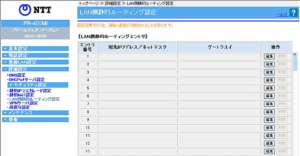

| LAN 内に他のルータが存在し、そのルータに接続されたパソコンから本商品を経由したインターネット通信を行う場合などに、あらかじめルーティングテーブルにルーティング情報の設定を行います。 |
| ※「Web設定」画面に表示されているボタンについての説明は こちら |
|  |
 宛先IPアドレス／ネットマスク 宛先IPアドレス／ネットマスク |
|
| 宛先IPアドレス／ネットマスクを入力します。 マスク長とはマスクのビット数を表したもので、例えば255.255.255.0 のマスク長は「24」となります。 |
|
| ゲートウェイ |
|
| 宛先へのゲートウェイアドレスを入力します。 | |
| 編集したいエントリの行末にある［編集］をクリックする 「エントリ編集」の画面が表示されます。 編集後、［設定］をクリックする |
| 削除したいエントリの行末にある［削除］をクリックする |
| 宛先IPアドレス |
|
| ルーティング先のIPアドレスを指定します。 設定可能範囲：ループバックアドレス（ 127.0.0.1 〜 127.255.255.255 ） を除く0.0.0.0 〜255.255.255.255のネットワークアドレス |
|
| ネットマスク |
|
| ルーティング先のネットマスクを指定します。 設定可能数値：0、128、192、224、240、248、252、254、255 ※マスク値が連続している必要があります。（連続しないマスク値の入力例：255.0.255.0） |
|
| ゲートウェイ |
|
| ルーティング先のゲートウェイのIPアドレスを指定します。 設定可能範囲：ループバックアドレス（ 127.0.0.1 〜 127.255.255.255 ） を除く1.0.0.0 〜223.255.255.255でLAN側またはPPPoEと同一ネットワークのアドレス |
|